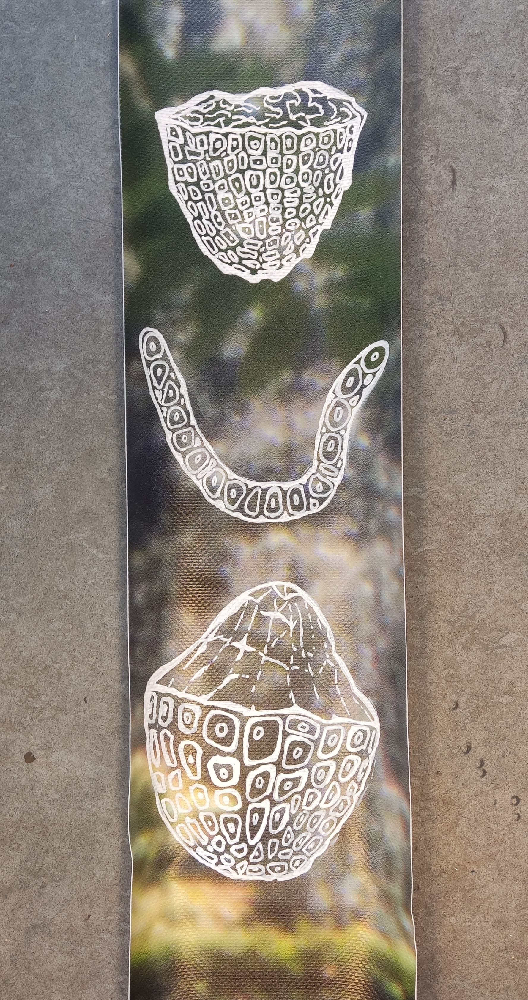

{kind=link}
{kind=link}

Sous cloche
L’installation Sous cloche se décline autour du houblon, évoquant la frontière entre biodiversité cultivée et biodiversité spontanée.
Après avoir porté les bières régionales belges au niveau des marchés internationaux, des variétés entières de houblons ont pourtant disparu à partir du XXe siècle, victimes de l’homogénéisation des goûts et des procédés industriels.
Comme des pans de mémoire agronomique oubliés.
L’installation se concentre sur ces variétés, parmi lesquelles certaines ont été redécouvertes au début des années 2000 grâce à des collaborations scientifiques internationales.
Le nom de l'installation provient de l'une d'elles, le Groene Belle, elle-même nommée d'après la forme du cône : une cloche verte.
Les dessins, issus de gravures botaniques d'il y a 100 ans, se déploient sur une photographie monumentale récupérée du Centre International pour la Ville et l'Architecture (aujourd'hui Kanal Architecture) représentant le parc René Pechère de Bruxelles, symbole des jardins modernes.
La disposition verticale des bandes évoque la pousse des houblonnières.
L'ensemble matérialise une nature maîtrisée, du macro au micro.
Les portions manquantes évoquent les variétés encore perdues, comme le Buvrinnes ou le Witte Rank.
L’installation se veut un hommage aux échanges qui déverrouillent notre notre accès à la biodiversité vivante et cultivée.
Au milieu, une composition réalisée à partir de cônes de houblon séchés, diffuse leur arôme.
Leur récupération à été permise par plusieurs brasseurs amateurs, botanistes et biologistes qui ont travaillé sur des programmes de réintroduction de variétés perdues de houblons belges.
Le mouvement ainsi créé par ses bras fuyants de l’écoulement renforce le contraste entre matière contenue et matière spontanée.
En novembre 2025, une version interactive de l'installation a été exposée sous le titre Unlockers dans l'espace public, dans le cadre de Meander, exposition de Curating the Young / BAMM! vzw organisée durant le Fringe Festival au Sluispark (Leuven, BE) à l'occasion des 600 ans de l'Université KU Leuven.
Remerciements : Ruben Meert, professeur de biologie du Lycée d’Aalst et brasseur amateur, qui a partagé de la documentation ainsi que des cônes de variétés de houblon retrouvées par lui et son groupe de recherche.
Merci également à In Limbo pour les casiers, la bâche et l'espace de son atelier.
{kind=link}
{kind=link}
{kind=link}
{kind=link}